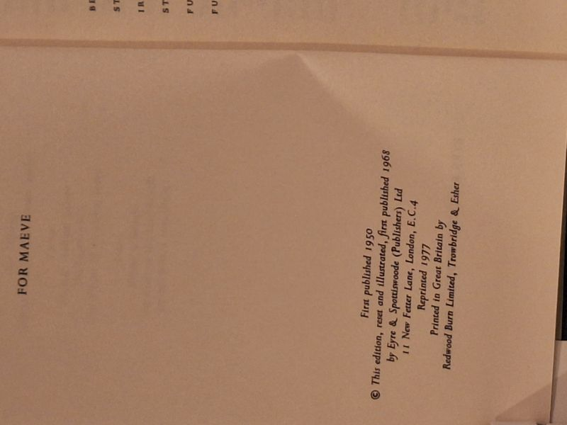

Gormenghast
Mervyn Peake · Eyre & Spottiswoode, London, 1977

C$32 · Good condition
Eyre & Spottiswoode, London. The reset illustrated edition (first published in this form 1968), this copy the 1977 reprint. The second volume of Mervyn Peake's Gormenghast Trilogy, with the author's own line drawings. Hardcover with the cream pictorial dust jacket carrying Peake's pen-and-ink Steerpike/chessboard design. DJ present with light soiling and edge wear; boards clean; binding tight.
Details
- Publisher: Eyre & Spottiswoode, London, 1977
- Binding: Hardcover
- Edition: Illustrated edition (first published 1968), 1977 reprint
- Condition: Good
- Dust jacket: Good
- Category: Literary Fiction